Contexto
Contexto

NoSQL
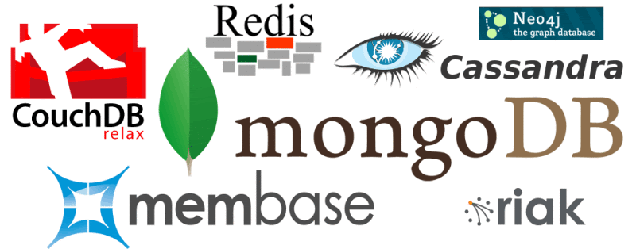
O que é NoSQL?
Slide 6
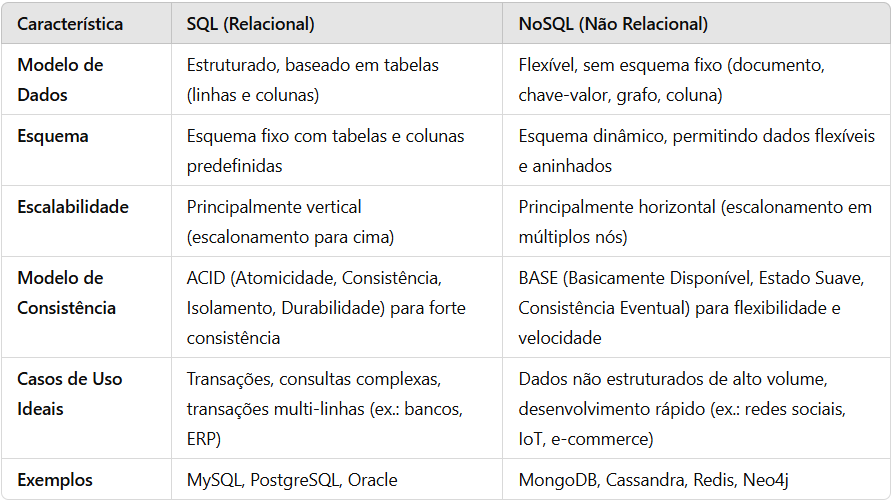
Vantagens dos NoSQL
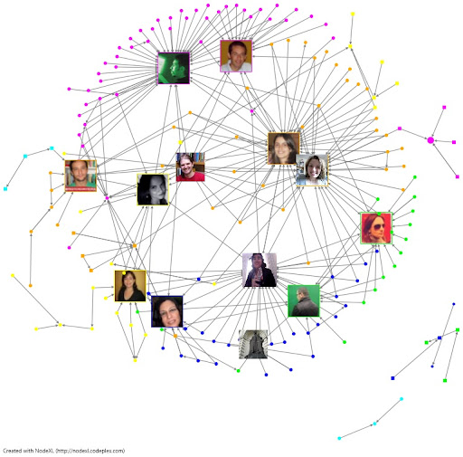
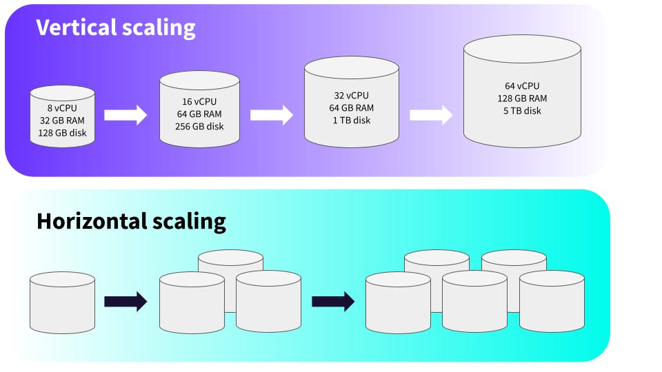
Tipos de NoSQL


CHAVE
VALOR

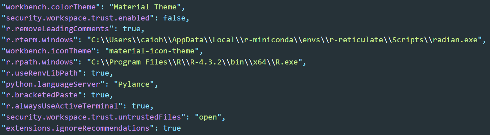
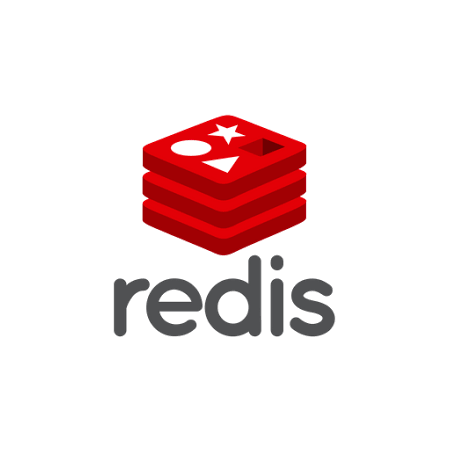
Coleção (ex: usuários)
Documento

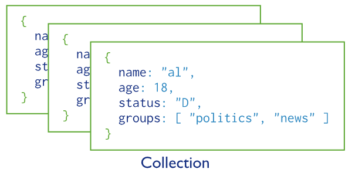
Coleção (ex: usuários)
Documento
JSON?


Dados armazenados por coluna! Ótimo para aplicações de ciência de dados: Quero a média da coluna Nota

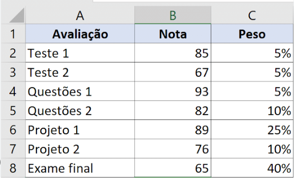
Slide 13
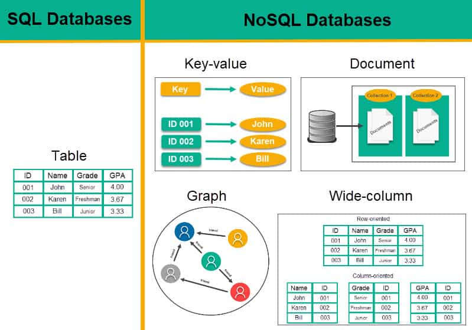
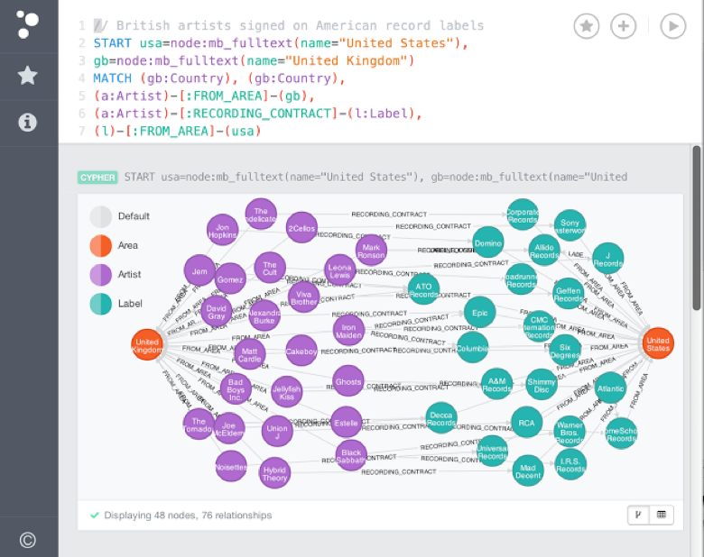
Então devo esquecer o SQL?
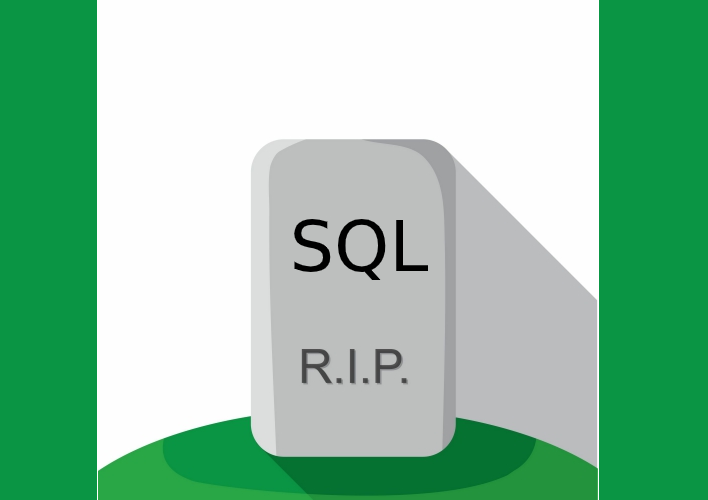

Então devo esquecer o SQL?

Problemas do NoSQL
Voltando ao SQL

O PostgreSQL implementou muita coisa que o NoSQL tinha:
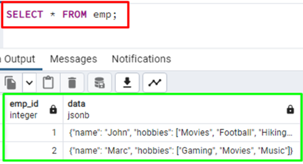
JSON vs JSONB
Importando dados JSON
Baixe o conteudo.json
https://drive.google.com/uc?export=download&id=1J_-squJ7lBeT4PbLVOk9mPIChC7108ky
Para importar:
Trabalhando com JSONB no PostgreSQL

->: depois da seta escreva o nome de uma chave ou um número para acessar um campo ->>: escreva o nome de uma chave ou um número para acessar um campo como texto #>: mesmo que ->, mas permite acessar por meio de um caminho objetos aninhados #>>: mesmo que ->>, mas permite acessar por meio de um caminho objetos aninhados
Funções básicas de acesso
SELECT conteudo->0->'nome' FROM dados_json;
Funções básicas de acesso
OU
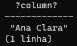
Modificando dados no JSON
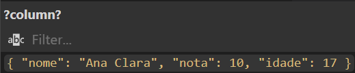
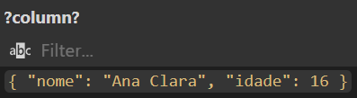
Expandindo array para linhas
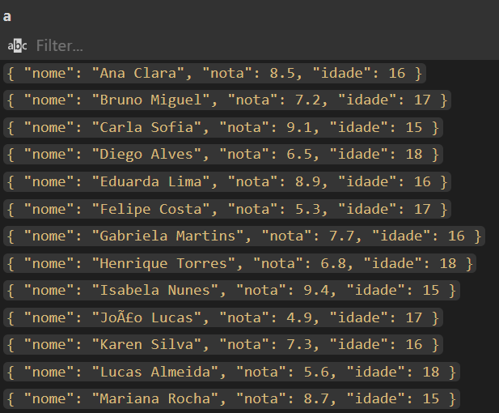
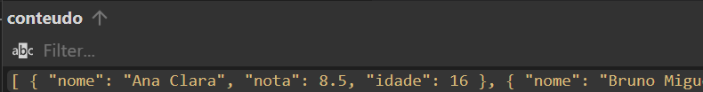
Expandindo JSONB para colunas
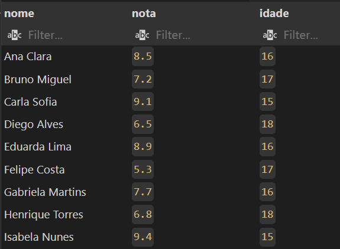
Filtrando diretamente no JSON
Quando tiver um JSON em cada linha
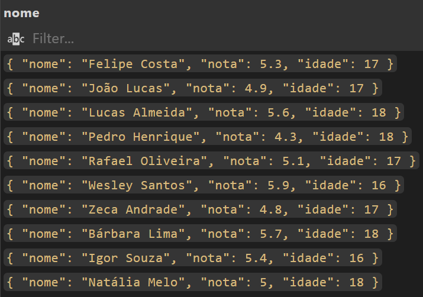
Filtrando diretamente no JSON
Quando tiver um array em JSON
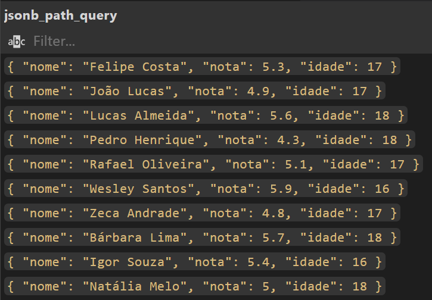
Saiba mais
PostgreSQL: Documentation: 17: 9.16. JSON Functions and Operators
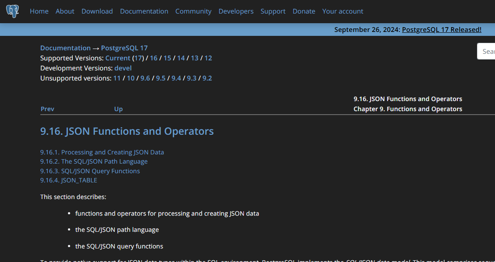
Retornando tabelas como JSON
Vamos criar a tabela de alunos
Podemos adicionar os dados a partir da tabela com dados JSON
Podemos adicionar os dados a partir da tabela com dados JSON
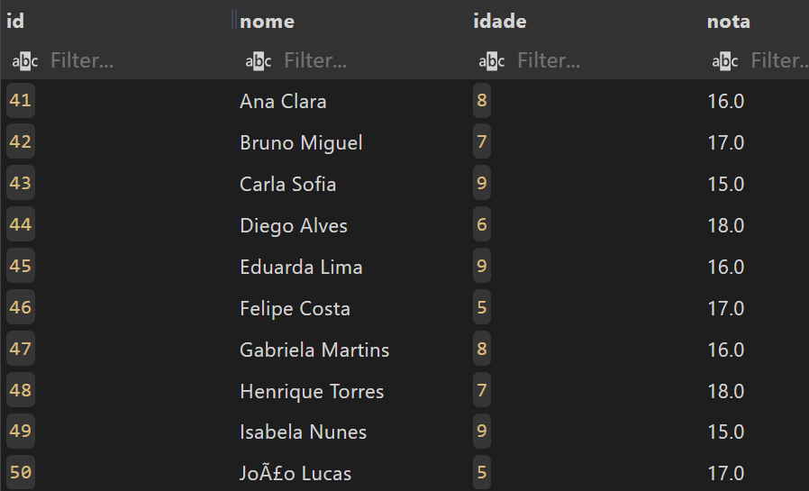
Se quisermos voltar para JSON
Ou ainda formatando como objeto de objetos
Prática!
Slide visual do material original.
Prof. Caio Hamamura
Bons estudos!